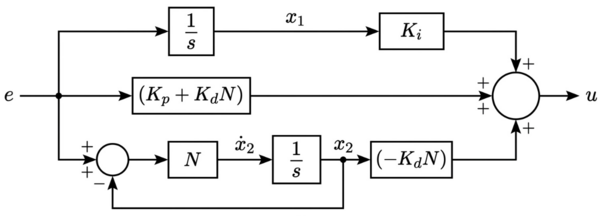

PID-Control (with Derivative Filter) in State Space Format¶
from IPython.core.display import HTML
import numpy as np
import matplotlib.pyplot as plt
plt.rcParams.update({
"text.usetex": True,
"font.family": "Helvetica",
"font.size": 10,
})
from sympy import *
from sympy.plotting import plot
from mathprint import *
Kp, Ki, Kd = symbols('K_p K_i K_d', positive=True)
Ts, N = symbols('T_s N', positive=True)
s = symbols('s', complex=True)
E, e, U, u = symbols('E e U u')
X1, X2, x1, x2 = symbols('X_1 X_2 x_1 x_2')
x1_dot = Symbol(r'\dot{x_1}')
x2_dot = Symbol(r'\dot{x_2}')
def laplace(f):
F = laplace_transform(f, t, s, noconds=True)
return F
def ilaplace(F):
f = inverse_laplace_transform(F, s, t)
return f
def frac_to_tf(frac):
return TransferFunction(fraction(frac)[0], fraction(frac)[1], s)
PID-control equation, \(E(s)\) is the error in a Laplace form:
P = Kp * E
I = Ki * E / s
D = Kd * N * s / (s + N) * E
U = P + I + D
mprint("U(s)= ", latex(U))
where:
\(K_p\) is the proportional gain
\(K_i\) is the integral gain
\(K_d\) is the derivative gain
\(N\) is the filter coefficient
\(e(t)\) or \(E(s)\) is the input to the controller, which is the error between the target and the actual output of the system
\(u(t)\) or \(U(s)\) is the computed control signal that will be sent to the system
U = apart(U, s)
mprint("U(s)= ", latex(U))
Define \(X_1(s)\) and \(X_2(s)\):
eq1 = Eq(X1, E/s)
mprint(latex(eq1))
eq2 = Eq(X2, N/(s+N)*E)
mprint(latex(eq2))
Substitute \(X_1\) and \(X_2\) into \(U\):
U = U.subs(((eq1.rhs, eq1.lhs), (eq2.rhs, eq2.lhs)))
mprintb("U=", latex(U))
U = collect(U, [Kd, N])
mprintb("U=", latex(U))
Next, we need to express \(\dot{x}_1\) and \(\dot{x}_2\).
Multiply both sides of \(X1\) with \(s\) and bring to time domain:
eq1 = expand(Eq(eq1.lhs*s, eq1.rhs*s))
mprint(latex(eq1))
eq1 = eq1.subs(X1*s, x1_dot).subs(E, e)
mprintb(latex(eq1))
Multiply both sides of \(X2\) with \(N+s\) and bring to time domain:
eq2 = expand(Eq(eq2.lhs*(s+N), eq2.rhs*(s+N)))
mprint(latex(eq2))
eq2 = eq2.subs(X2*s, x2_dot).subs(X2, x2).subs(E,e)
mprint(latex(eq2))
eq2 = Eq(x2_dot, solve(eq2, x2_dot)[0])
mprintb(latex(eq2))
Finally, substitute the state definitions into \(U\), then move from Laplace-domain variables \(\left(X_1, X_2, E\right)\) to time-domain variables \(\left(x_1, x_2, e\right)\).
u = U.subs(((eq1.rhs, eq1.lhs), (eq2.rhs, eq2.lhs))).subs(((X1, x1), (X2, x2), (E, e)))
mprintb("u(t)=", latex(u))
Therefore, the PID-control state space can be expressed as:
with:
